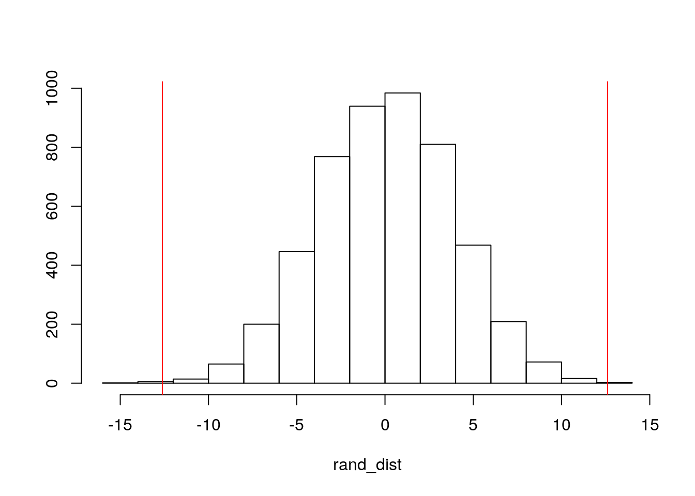
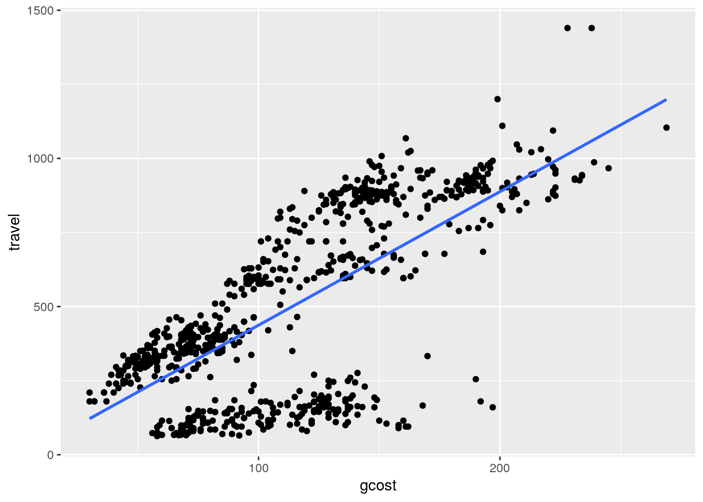
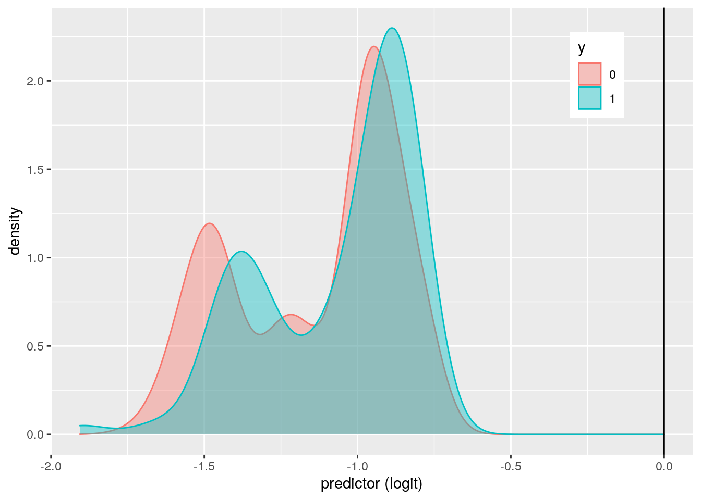
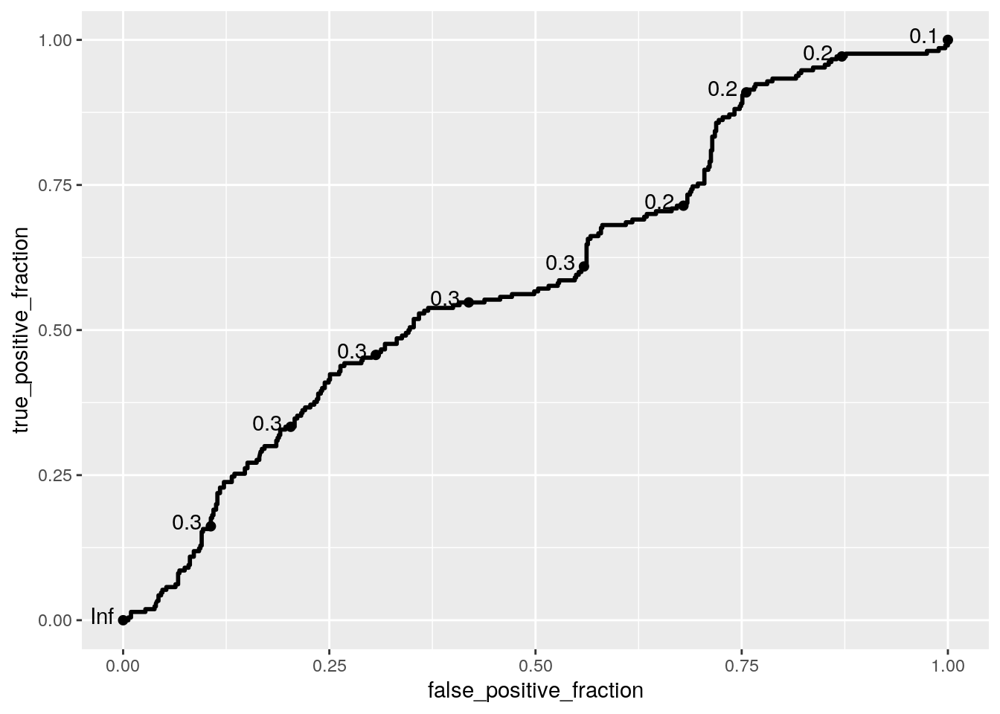

This dataset that we are particularly focused on contains data on travel mode choice for travel between Sydney and Melbourne, Australia. This particular dataset has 840 obeservations consisting of a total of 210 individuals, represented by the variable 'individual'. Other important variables that will pertain to this statistial analysis are 'choice' representing a factor indicating choice with levels "no" and "yes", 'mode' representing the mode of transportation, 'travel' representing travel time in the vehicle, and 'gcost' representing generalized measure.
library(tidyverse)## ── Attaching packages ─────────────────────────────────────── tidyverse 1.3.0 ──## ✓ ggplot2 3.3.2 ✓ purrr 0.3.4
## ✓ tibble 3.0.4 ✓ dplyr 1.0.2
## ✓ tidyr 1.1.2 ✓ stringr 1.4.0
## ✓ readr 1.4.0 ✓ forcats 0.5.0## ── Conflicts ────────────────────────────────────────── tidyverse_conflicts() ──
## x dplyr::filter() masks stats::filter()
## x dplyr::lag() masks stats::lag()library(tidyr)
library(dplyr)
TravelMode <- read.csv("TravelMode.csv")
fulldata <- TravelModetest <- manova(cbind(vcost,gcost)~mode,data=fulldata)
summary(test)## Df Pillai approx F num Df den Df Pr(>F)
## mode 3 0.84969 205.84 6 1672 < 2.2e-16 ***
## Residuals 836
## ---
## Signif. codes: 0 '***' 0.001 '**' 0.01 '*' 0.05 '.' 0.1 ' ' 1summary.aov(test)## Response vcost :
## Df Sum Sq Mean Sq F value Pr(>F)
## mode 3 491275 163758 352.93 < 2.2e-16 ***
## Residuals 836 387898 464
## ---
## Signif. codes: 0 '***' 0.001 '**' 0.01 '*' 0.05 '.' 0.1 ' ' 1
##
## Response gcost :
## Df Sum Sq Mean Sq F value Pr(>F)
## mode 3 146870 48957 22.936 2.83e-14 ***
## Residuals 836 1784443 2135
## ---
## Signif. codes: 0 '***' 0.001 '**' 0.01 '*' 0.05 '.' 0.1 ' ' 1pairwise.t.test(fulldata$vcost, fulldata$mode, p.adj="none")##
## Pairwise comparisons using t tests with pooled SD
##
## data: fulldata$vcost and fulldata$mode
##
## air bus car
## bus < 2e-16 - -
## car < 2e-16 4.5e-09 -
## train < 2e-16 < 2e-16 < 2e-16
##
## P value adjustment method: nonepairwise.t.test(fulldata$gcost, fulldata$mode, p.adj="none")##
## Pairwise comparisons using t tests with pooled SD
##
## data: fulldata$gcost and fulldata$mode
##
## air bus car
## bus 0.00528 - -
## car 0.10903 1.2e-05 -
## train 1.5e-09 0.00096 3.4e-14
##
## P value adjustment method: nonelibrary(rstatix)##
## Attaching package: 'rstatix'## The following object is masked from 'package:stats':
##
## filtergroup <- fulldata$mode
DVs <- fulldata %>% select(vcost, gcost)
#Test multivariate normality for each group (null: assumption met)
sapply(split(DVs,group), mshapiro_test)## air bus car train
## statistic 0.933817 0.9861372 0.8695608 0.9813711
## p.value 3.730636e-08 0.03802302 1.897276e-12 0.007030646#If any p<.05, stop (assumption violated). If not, test homogeneity of covariance matrices
#Box's M test (null: homogeneity of vcov mats assumption met)
box_m(DVs, group)## # A tibble: 1 x 4
## statistic p.value parameter method
## <dbl> <dbl> <dbl> <chr>
## 1 794. 3.98e-165 9 Box's M-test for Homogeneity of Covariance Matr…#Optionally View covariance matrices for each group
lapply(split(DVs,group), cov)## $air
## vcost gcost
## vcost 751.2614 817.6109
## gcost 817.6109 934.8322
##
## $bus
## vcost gcost
## vcost 158.5364 479.2264
## gcost 479.2264 2019.1010
##
## $car
## vcost gcost
## vcost 215.4402 447.868
## gcost 447.8680 2192.808
##
## $train
## vcost gcost
## vcost 730.732 1413.104
## gcost 1413.104 3391.261After performing a MANOVA test, we can reject the null hypothesis and conclude that for at least vehicle cost or generalized cost, at least one mode mean is different. Then, after performing univariate ANOVAs, we reject the null hypothesis and conclude that for both vehicle cost and generalized cost, at least one mode differs. Post hoc analysis was performed conducting pairwise comparisons to determine which mode differed in vehicle cost and generalized cost. After conducting a total of 15 tests that consisted of 1 MANOVA, 2 ANOVAs, and 12 t-tests, we adjusted for the bonferroni correction which yielded us a significance level of 0.003. All three transportation modes were found to differ significantly from each other in terms of vehicle cost and generalized cost, except between air and bus, and air and car for generalized cost. Assumptions for MANOVA include random samples, multivariate normality, homogeneity, and others. When testing for multivariate normality, air and car fail the test so we can conclude that assumptions are violated and not met.
data2 <- fulldata %>% select(gcost, mode) %>% filter(mode=="air" | mode=="bus")
data2 %>% group_by(mode) %>% summarize(means=mean(gcost)) %>% summarize(`mean_diff`=diff(means))## `summarise()` ungrouping output (override with `.groups` argument)## # A tibble: 1 x 1
## mean_diff
## <dbl>
## 1 12.6rand_dist<-vector()
for(i in 1:5000){
new<-data.frame(cost=sample(data2$gcost),mode=data2$mode)
rand_dist[i]<-mean(new[new$mode=="air",]$cost)-
mean(new[new$mode=="bus",]$cost)
}
mean(rand_dist>12.610 | rand_dist< -12.610)## [1] 0.0012{hist(rand_dist,main="",ylab=""); abline(v = c(-12.610, 12.610),col="red")} H0: mean generalized cost measure is the same for air vs. bus travel HA: mean generalized cost measure is different for air vs. bus travel
Based upon the randomization test on mean difference, we can reject the null hypothesis (p-value=2e-04) and conclude that the mean generalized cost measure is different for air vs. bus travel. In addition, the p-value corresponds to the probability of observing a mean difference as extreme as the one we got under this "randomization distribution".
fulldata$travel_c <- fulldata$travel-mean(fulldata$travel, na.rm = T)
fulldata$gcost_c <- fulldata$gcost-mean(fulldata$gcost, na.rm = T)
fulldata$income_c <- fulldata$income-mean(fulldata$income, na.rm = T)
fit<-lm(travel~gcost_c*income_c, data=fulldata)
summary(fit)##
## Call:
## lm(formula = travel ~ gcost_c * income_c, data = fulldata)
##
## Residuals:
## Min 1Q Median 3Q Max
## -726.57 -133.18 64.78 125.25 460.75
##
## Coefficients:
## Estimate Std. Error t value Pr(>|t|)
## (Intercept) 486.396723 7.274025 66.868 <2e-16 ***
## gcost_c 4.544114 0.152265 29.843 <2e-16 ***
## income_c -0.819930 0.370001 -2.216 0.027 *
## gcost_c:income_c -0.002477 0.007732 -0.320 0.749
## ---
## Signif. codes: 0 '***' 0.001 '**' 0.01 '*' 0.05 '.' 0.1 ' ' 1
##
## Residual standard error: 209.8 on 836 degrees of freedom
## Multiple R-squared: 0.5174, Adjusted R-squared: 0.5157
## F-statistic: 298.8 on 3 and 836 DF, p-value: < 2.2e-16fulldata %>% ggplot(aes(gcost,travel))+geom_point()+geom_smooth(method = 'lm',se=F)## `geom_smooth()` using formula 'y ~ x'
library(sandwich); library(lmtest)## Loading required package: zoo##
## Attaching package: 'zoo'## The following objects are masked from 'package:base':
##
## as.Date, as.Date.numericbptest(fit)##
## studentized Breusch-Pagan test
##
## data: fit
## BP = 41.163, df = 3, p-value = 6.04e-09require(graphics)
resids<-lm(travel~gcost_c*income_c, data=fulldata)$residuals
ks.test(resids, "pnorm", sd=sd(resids))## Warning in ks.test(resids, "pnorm", sd = sd(resids)): ties should not be present
## for the Kolmogorov-Smirnov test##
## One-sample Kolmogorov-Smirnov test
##
## data: resids
## D = 0.17045, p-value < 2.2e-16
## alternative hypothesis: two-sidedcoeftest(fit, vcov = vcovHC(fit))##
## t test of coefficients:
##
## Estimate Std. Error t value Pr(>|t|)
## (Intercept) 486.3967227 7.3272563 66.3818 < 2e-16 ***
## gcost_c 4.5441135 0.1224602 37.1069 < 2e-16 ***
## income_c -0.8199297 0.3720681 -2.2037 0.02782 *
## gcost_c:income_c -0.0024775 0.0065424 -0.3787 0.70502
## ---
## Signif. codes: 0 '***' 0.001 '**' 0.01 '*' 0.05 '.' 0.1 ' ' 1Looking at the coefficient estimates, mean/predicted travel time with average generalized cost and income is 486.397 minutes. Controlling for income, for every 1 unit increase in generalized cost, travel time increases by 4.544 minutes on average. Controlling for generalized cost, for every 1 unit increase in income, travel time decreases by 0.820 minutes on average.
After checking assumptions for linearity, homoskedasticity, and normality by running hypothesis tests, we fail to met any assumptions.
After recomputing regression results with robust standard errors, results are still the same in that generalized cost and income are both significant.
Based upon the R-squared, 0.5174 of variation in travel time is explained by the overall model.
samp_distn<-replicate(5000, {
boot_dat <- sample_frac(fulldata, replace=T)
fit<-lm(travel~gcost_c*income_c, data=boot_dat)
coef(fit)
})
summary(fit)##
## Call:
## lm(formula = travel ~ gcost_c * income_c, data = fulldata)
##
## Residuals:
## Min 1Q Median 3Q Max
## -726.57 -133.18 64.78 125.25 460.75
##
## Coefficients:
## Estimate Std. Error t value Pr(>|t|)
## (Intercept) 486.396723 7.274025 66.868 <2e-16 ***
## gcost_c 4.544114 0.152265 29.843 <2e-16 ***
## income_c -0.819930 0.370001 -2.216 0.027 *
## gcost_c:income_c -0.002477 0.007732 -0.320 0.749
## ---
## Signif. codes: 0 '***' 0.001 '**' 0.01 '*' 0.05 '.' 0.1 ' ' 1
##
## Residual standard error: 209.8 on 836 degrees of freedom
## Multiple R-squared: 0.5174, Adjusted R-squared: 0.5157
## F-statistic: 298.8 on 3 and 836 DF, p-value: < 2.2e-16samp_distn %>% t %>% as.data.frame %>% summarize_all(sd)## (Intercept) gcost_c income_c gcost_c:income_c
## 1 7.325053 0.1231167 0.3728829 0.006567049coeftest(fit)[,1:2]## Estimate Std. Error
## (Intercept) 486.396722658 7.274024859
## gcost_c 4.544113527 0.152265275
## income_c -0.819929653 0.370000689
## gcost_c:income_c -0.002477473 0.007732158coeftest(fit, vcov=vcovHC(fit))[,1:2]## Estimate Std. Error
## (Intercept) 486.396722658 7.327256267
## gcost_c 4.544113527 0.122460173
## income_c -0.819929653 0.372068112
## gcost_c:income_c -0.002477473 0.006542383There is little to no change observed in bootstrapped standard errors when compared to the original and robust standard errors. The p-values are also consistent with previous models and results do not change.
data <- fulldata %>% mutate(y=ifelse(choice=="yes",1,0))
fit2 <- glm(y~travel+vcost, data=data, family="binomial")
coeftest(fit2)##
## z test of coefficients:
##
## Estimate Std. Error z value Pr(>|z|)
## (Intercept) -0.59671859 0.20559751 -2.9024 0.003704 **
## travel -0.00088291 0.00028252 -3.1252 0.001777 **
## vcost -0.00188615 0.00248728 -0.7583 0.448260
## ---
## Signif. codes: 0 '***' 0.001 '**' 0.01 '*' 0.05 '.' 0.1 ' ' 1probs<-predict(fit2,type="response")
table(truth=data$y, prediction=as.numeric(probs>.5))%>%addmargins## prediction
## truth 0 Sum
## 0 630 630
## 1 210 210
## Sum 840 840630/840 #accuracy## [1] 0.750/210 #sensitivity## [1] 0630/630 #specificity## [1] 10/0 #precision## [1] NaNdata$logit<-predict(fit2,type="link")
data$y<-as.factor(data$y)
data %>% ggplot() + geom_density(aes(logit,color=y,fill=y), alpha=.4) +
theme(legend.position=c(.85,.85)) + geom_vline(xintercept=0) +xlab("predictor (logit)")
library(plotROC)
data3 <- fulldata %>% mutate(y=ifelse(choice=="yes",1,0)) %>% transmute(probs,truth=y)
ROCplot<-ggplot(data3)+geom_roc(aes(d=truth,m=probs))
ROCplot
calc_auc(ROCplot)## PANEL group AUC
## 1 1 -1 0.5917914Looking at the coefficient estimates, the odds of having a choice of transportation when the travel time and vehicle cost component is zero is -0.597. Controlling for vehicle cost, for every one additional minute in travel time, the odds of choice for transportation decrease by a factor of -0.0009. When controlling for travel time, for every dollar increase in vehicle cost component, the odds of choice for transportation decrease by -0.0019.
A confusion matrix was created to compare model predictions versus true outcomes. The accuracy or proportion of correctly classified outcomes was .75, the sensitivity(TPR) or proportion of '"yes" choice' correctly classified was 0, the specificity(TFR) or proportion of '"no" choice' correctly classified was 1, and the precision proportion classified '"yes" choice' who actually are is 0.
After plotting a ROC curve, the AUC was calculated to be 0.592. This is a bad AUC and means that it is hard to predict having the choice to choose a mode of transportation from travel time and vehicle cost component.
class_diag<-function(probs,truth){
tab<-table(factor(probs>.5,levels=c("FALSE","TRUE")),truth)
acc=sum(diag(tab))/sum(tab)
sens=tab[2,2]/colSums(tab)[2]
spec=tab[1,1]/colSums(tab)[1]
ppv=tab[2,2]/rowSums(tab)[2]
f1=2*(sens*ppv)/(sens+ppv)
if(is.numeric(truth)==FALSE & is.logical(truth)==FALSE){
truth<-as.numeric(truth)-1}
#CALCULATE EXACT AUC
ord<-order(probs, decreasing=TRUE)
probs <- probs[ord]; truth <- truth[ord]
TPR=cumsum(truth)/max(1,sum(truth))
FPR=cumsum(!truth)/max(1,sum(!truth))
dup<-c(probs[-1]>=probs[-length(probs)], FALSE)
TPR<-c(0,TPR[!dup],1); FPR<-c(0,FPR[!dup],1)
n <- length(TPR)
auc<- sum( ((TPR[-1]+TPR[-n])/2) * (FPR[-1]-FPR[-n]) )
data.frame(acc,sens,spec,ppv,f1,auc)
}
fit4 <- glm(choice~(.), data=fulldata, family="binomial")
probs <- predict(fit4, type="response")
class_diag(probs,data$y)## acc sens spec ppv f1 auc
## 1 0.8535714 0.4142857 1 1 0.5858586 0.7925246k=10
data4<-fulldata[sample(nrow(fulldata)),]
folds<-cut(seq(1:nrow(fulldata)),breaks=k,labels=F)
diags<-NULL
for(i in 1:k){
train<-data4[folds!=i,]
test<-data4[folds==i,]
truth<-test$choice
fit4<- glm(choice~(.), data=fulldata, family="binomial")
probs<- predict(fit4, newdata=test, type="response")
diags<-rbind(diags,class_diag(probs,truth))
}## Warning in predict.lm(object, newdata, se.fit, scale = 1, type = if (type == :
## prediction from a rank-deficient fit may be misleading
## Warning in predict.lm(object, newdata, se.fit, scale = 1, type = if (type == :
## prediction from a rank-deficient fit may be misleading
## Warning in predict.lm(object, newdata, se.fit, scale = 1, type = if (type == :
## prediction from a rank-deficient fit may be misleading
## Warning in predict.lm(object, newdata, se.fit, scale = 1, type = if (type == :
## prediction from a rank-deficient fit may be misleading
## Warning in predict.lm(object, newdata, se.fit, scale = 1, type = if (type == :
## prediction from a rank-deficient fit may be misleading
## Warning in predict.lm(object, newdata, se.fit, scale = 1, type = if (type == :
## prediction from a rank-deficient fit may be misleading
## Warning in predict.lm(object, newdata, se.fit, scale = 1, type = if (type == :
## prediction from a rank-deficient fit may be misleading
## Warning in predict.lm(object, newdata, se.fit, scale = 1, type = if (type == :
## prediction from a rank-deficient fit may be misleading
## Warning in predict.lm(object, newdata, se.fit, scale = 1, type = if (type == :
## prediction from a rank-deficient fit may be misleading
## Warning in predict.lm(object, newdata, se.fit, scale = 1, type = if (type == :
## prediction from a rank-deficient fit may be misleadingsummarize_all(diags,mean)## acc sens spec ppv f1 auc
## 1 0.8535714 0.4187738 1 1 0.5798517 0.7937984library(glmnet)## Loading required package: Matrix##
## Attaching package: 'Matrix'## The following objects are masked from 'package:tidyr':
##
## expand, pack, unpack## Loaded glmnet 4.0-2fulldata <- fulldata %>% mutate(y=ifelse(choice=="yes",1,0)) %>% na.omit()
fulldata$y<-as.factor(fulldata$y)
y <- as.matrix(fulldata$y)
x<-model.matrix(y~wait+vcost+travel+gcost+income+size,data=fulldata)[,-1]
cv.lasso1<-cv.glmnet(x,y,family="binomial")
lasso1<-glmnet(x,y,family="binomial",alpha=1,lambda=cv.lasso1$lambda.1se)
coef(lasso1)## 7 x 1 sparse Matrix of class "dgCMatrix"
## s0
## (Intercept) -0.2426959045
## wait -0.0175463789
## vcost 0.0013487042
## travel -0.0007239281
## gcost .
## income .
## size .diags<-NULL
for(i in 1:k){
train<-data4[folds!=i,]
test<-data4[folds==i,]
truth<-test$choice
fit5<- glm(choice~wait+vcost+travel, data=fulldata, family="binomial")
probs<- predict(fit5, newdata=test, type="response")
diags<-rbind(diags,class_diag(probs,truth))
}
summarize_all(diags,mean)## acc sens spec ppv f1 auc
## 1 0.7952381 0.1975472 0.9949991 0.9416667 0.3207923 0.7169942After performing a logistic regression predicting the choice variable from all of the rest of the variables, we get a value of 0.854 for accuracy, 0.414 for sensitivity, 1 for specificity, 1 for precision, and an AUC of 0.793. With that AUC value, this means this is a fair fit and that all variables can fairly predict a choice of transportation.
After performing a 10-fold CV with the same model, we get a value of 0.854 for accuracy, 0.418 for sensitivity, 1 for specificity, and 0.793 for AUC. This AUC value is consistent with our in-sample classification diagnostics in that the model is still a fair fit.
After performing a LASSO on the model/variables, the variables with a non-zero coefficient that are useful for predicting choice are wait, vcost, and travel. A 10-fold CV was then ran using only these three lasso-selected variables. This model yielded a 0.795 accuracy, 0.202 sensitivity, 0.996 specificity, 0.935 precision, and an AUC of 0.718. Compared to the previous logistic regressions, the 10-fold CV with lasso-selected variables had a slightly worse fit with a lower AUC of 0.718 compared to that of the other models that had an AUC of 0.793. Therefore, the simpler lasso-selected variables model does not perform as well as the other logisitic regression models.